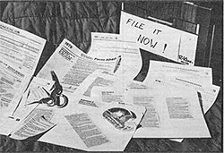

My accountant used to turn a sickly shade of green when I'd arrive at his office . . . carrying my year's tax records in a shoebox that threatened to explode its seams at any moment. And I imagine he'd have been even more distressed if he'd been aware that I usually had to spend a week, at least, searching in every drawer and closet for those jumbled bits and pieces of financial information.
Deep down inside, I knew that my slip-shod technique (or lack of it) was no way for an ex-accounting student (or anyone else, for that matter) to keep books. So when the tax man started to recommend other accountants that I might want to try the following year, I decided - like it or not - to set up a filing system.
Still, I didn't want to spend a lot of time maintaining tax records. If my system were to work at all, I knew it would have to be simple and convenient . . . yet allow me to answer all of Uncle Sam's possible questions at a glance.
While many folks don't have enough appropriate expenses each year to itemize their deductions, the only way many of us can know whether it'll serve our purposes to do so is to collect information throughout the year. My first step, therefore, was to obtain a copy of "the long form" (1040). And, in the course of looking over that questionnaire, I discovered that my "dream system" had already been designed. After gathering a box, some tape, a pair of scissors, and a few folders. . . I was able to put it to work!
Tax forms are available from banks, post offices, accountants, or the Internal Revenue Service itself. (Be sure to get two or three copies of every sheet that might apply to your return.) Your previous year's form will work fine as a basis for a filing system, since there are usually very few drastic changes from one year to the next. Form 1040 is especially well suited to this job, because it lists all of the deductible expenses and ail of the special schedules needed. (If you've itemized in the past, your old tax report will probably tell you which of the latter might be required.)
Knowing that both my husband and I will likely be self-employed at least part of any given year (he's a carpenter and I'm a freelance writer), I picked up extra copies of Schedule C (Profit and Loss from Business). Then, since we might - at some time in the future - be selling stock, I collected copies of Schedule D (Capital Gains and Losses) . . . as well as Schedule E (Supplemental Income), to report the money we make renting the "old home place" when we go traveling. I didn't bother, however, with such forms as Schedule F (Farm Income) or R & RP (Credit for the Elderly), because these weren't applicable to our situation.
I suppose it would be possible to pick up a discarded cardboard "record container" box behind practically any store, but - for my own system - I decided to invest in a metal file. Its main advantages are that it can be closed . . . is very sturdy . . . and has enough room to hold several years' worth of records. (Uncle Sam, as you probably know, isn't happy with just the past year's files. He wants you to save them for at least three years, just in case he's a tad slow in checking up on you!)
Once I'd assembled all the ingredients necessary to set up my new system, I cut out the major headings - "wages", "interest income", "dividends", etc. - from good old Form 1040 . . . and taped each one to the tab of a folder. Here again, I based my choice of labels on my own needs. Since, for example, there's little likelihood of my collecting alimony, I didn't establish a file for such records. And, when I came to "income from business", I took my headings from Schedule C . . . and set up separate sets of folders for my husband and me in that category.
Furthermore, in order to have handy an official interpretation of what each heading means (and of what rules apply to them), I cut sections from the instruction book explaining the titles that I had used, and taped them to the front of the appropriate folders. That way, when I run across a record that I think should be kept, I can, readily determine whether it's an allowable deduction, or cash that should be considered income, or what have you.
In half an hour, I'd set up a complete tax -related file system . . . but, while I was at it, I realized that there are a few other records that I'm interested in, even if the IRS isn't. For instance, I can't begin to count the times I've had to rummage around trying (often unsuccessfully) to find the warranty on a battery that's died before its time, or the sales slip for a dress that immediately ripped a seam. So I set up some headings for myself. . . including "clothes", "food", "utilities", "insurance", "warranties", "important papers", "bills to pay", and - of course - "miscellaneous". With that done, I tucked my checkbook and our regular payment books into the front of the box.
At that point, I figured I had the family's financial life set up in an orderly fashion, and I'd be ready and able to face future tax returns with few qualms. The next important question was where to put the file so that it would, in fact, be used.
Since my husband and I had, over the years, developed a habit of throwing most receipts, canceled checks, etc. into a large kitchen "junk drawer", I decided to put my box on a counter close to this old depository. As a result, it's now almost as handy to file papers away properly as it would be to simply fling them into the former "catchall" . . . and it's sure a darn sight easier to locate any item that's required.
In the two years that I've used this filing system, I've found it to be both convenient and satisfying. In fact, last year I even tried my hand at doing our tax return myself. After all, our records were easy to locate, and I simply had to compute the totals and write them on the appropriate lines of the form!
Taxes, filing, and record-keeping still don't appeal to me, but my system has at least taken some of the hassle out of meeting my annual obligation to the government . . . and better yet, I'm now sure that we're getting every penny back on our tax returns that we're legally entitled to receive.
|
 |
|
|